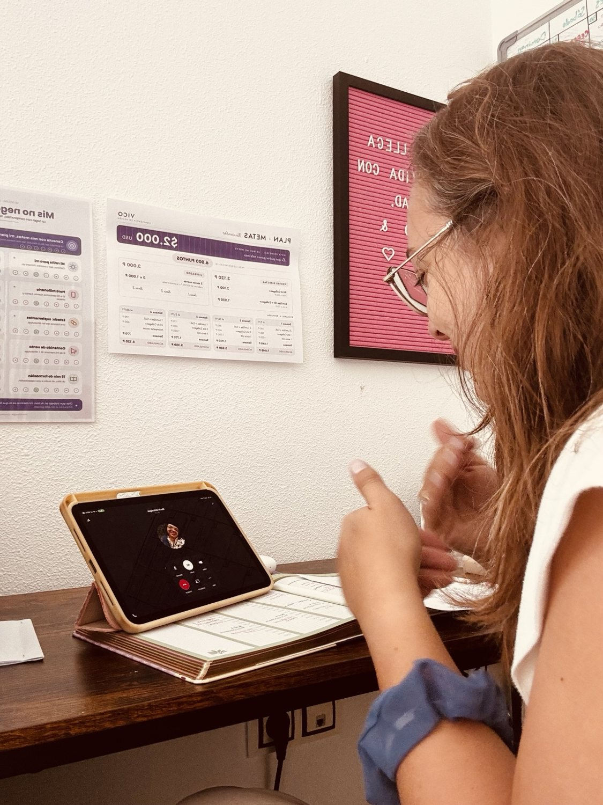
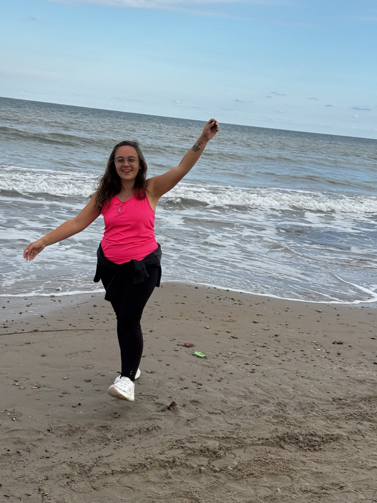
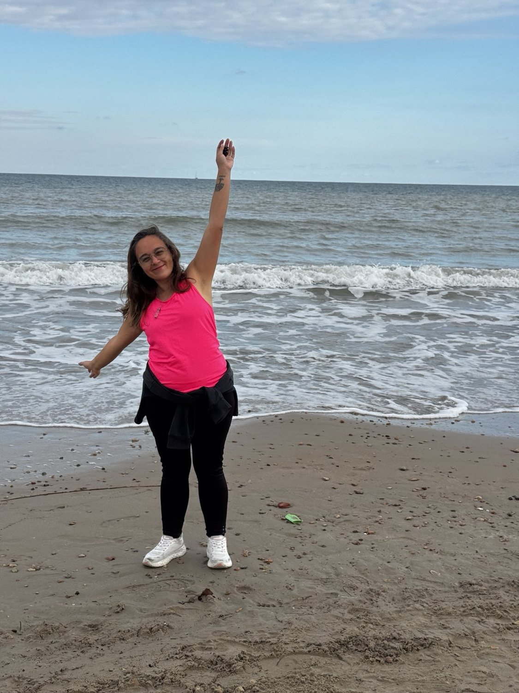

Construyendo
la vida que elijo.
Crear, emprender y acompañar.
Distintas formas de vivir con más sentido.

 Siempre en construcción.
Siempre en construcción.No soy una sola cosa.
Y me encanta que así sea.
Me gusta crear, emprender, descubrir nuevas posibilidades y acompañar a otras personas en sus propios procesos.
Mi camino no es una línea recta. Es una mezcla de experiencias y decisiones que tienen algo en común: vivir cada vez más conectada con lo que elijo.
Este espacio reúne mis propuestas de hoy y los proyectos que deseo seguir creando. Bienvenida a mi universo.
Más de una forma de
crear una vida con sentido.
Elegí por dónde querés empezar.
Cada camino tiene su propia historia.

01 / CONECTAR CON VOSAcompañamiento ↗
90 días para escucharte, elegir una dirección y dar tus próximos pasos.
Descubrí el proceso 02 / CONSTRUIR ALGO PROPIO
02 / CONSTRUIR ALGO PROPIOEmprendé conmigo ↗
Un negocio que elijo construir y una comunidad para crecer juntas.
Conocé la propuesta
03 / BIENESTAR Y AUTOCUIDADOProductos de bienestar ↗
Explorá opciones de cuidado personal y tecnologías de belleza con asesoramiento por WhatsApp.
Conocé los productos 04 / EN CONSTRUCCIÓN
04 / EN CONSTRUCCIÓNPapelería con sentido ↗
Un proyecto muy querido de papelería y objetos con intención, hoy en pausa.
Conocé el sueñoObservá.
Elegí.
Actuá.
Creo en los cambios que empiezan con decisiones pequeñas. En darnos permiso para elegir diferente. Y en construir algo propio, a nuestro ritmo.
Qué elijo hacer ahora?